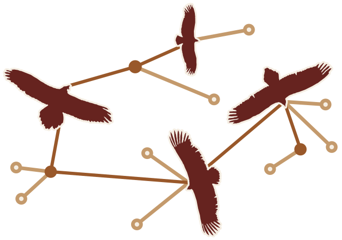

Vulture Cognition Analysis Network
How European vultures learn, decide and move
A research network on cognition in the four European vulture species, combining GPS tracking and experiments. Hosted by ECoBird at Ghent University.

4European vulture species
[n]partner institutions
[n]GPS-tracked vultures
Research
What we study
Early movement and learning
How young vultures explore and learn their landscape, and whether this differs between wild-hatched, captive-bred and released birds.
Feeding sites
How vultures anticipate, remember and use supplementary feeding sites.
Field experiments
Targeted experiments on learning and memory in wild vultures.
Obstacles and crossings
How vultures learn to deal with new obstacles and sea crossings on their routes.